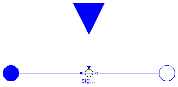
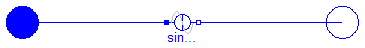

This package contains time-dependend and controlled multiphase voltage and current sources:
| Name | Description |
|---|---|
| SignalVoltage | Multiphase signal voltage source |
| SineVoltage | Multiphase sine voltage source |
| SignalCurrent | Multiphase sine current source |
| SineCurrent | Multiphase sine current source |
Modelica.Electrical.MultiPhase.Sources.SineVoltage

Contains m sine voltage sources (Modelica.Electrical.Analog.Sources.SineVoltage) with a default phase shift of -(j-1)/m * 2*pi for j in 1:m.
| Name | Default | Description |
|---|---|---|
| m | 3 | number of phases |
| V[m] | fill(1, m) | Amplitudes of sine waves [V] |
| phase[m] | -{(j - 1)/m*2*Modelica.Const... | Phases of sine waves [rad] |
| freqHz[m] | fill(1, m) | Frequencies of sine waves [Hz] |
| offset[m] | zeros(m) | Voltage offsets [V] |
| startTime[m] | zeros(m) | Time offsets [s] |
model SineVoltage "Multiphase sine voltage source"
extends Interfaces.TwoPlug;
parameter Modelica.SIunits.Voltage V[ m]=fill(1, m) "Amplitudes of sine waves";
parameter Modelica.SIunits.Angle phase[ m]=-{(j - 1)/m*2*Modelica.
Constants.pi for j in 1:m} "Phases of sine waves";
parameter Modelica.SIunits.Frequency freqHz[ m]=fill(1, m)
"Frequencies of sine waves";
parameter Modelica.SIunits.Voltage offset[ m]=zeros(m) "Voltage offsets";
parameter Modelica.SIunits.Time startTime[ m]=zeros(m) "Time offsets";
Modelica.Electrical.Analog.Sources.SineVoltage sineVoltage[
m](
final V=V,
final phase=phase,
final freqHz=freqHz,
final offset=offset,
final startTime=startTime);
equation
connect(sineVoltage.p, plug_p.pin);
connect(sineVoltage.n, plug_n.pin);
end SineVoltage;
Modelica.Electrical.MultiPhase.Sources.SignalVoltage
Contains m signal controlled voltage sources (Modelica.Electrical.Analog.Sources.SignalVoltage)
| Name | Default | Description |
|---|---|---|
| m | 3 | number of phases |
model SignalVoltage "Multiphase signal voltage source"
parameter Integer m(min=1) = 3 "number of phases";
Modelica.SIunits.Current i[
m] "Currents flowing into positive plugs";
Interfaces.PositivePlug plug_p(
final m=m);
Interfaces.NegativePlug plug_n(
final m=m);
Modelica.Blocks.Interfaces.RealInput v[
m](
redeclare type SignalType = Modelica.SIunits.Voltage)
"Voltage between pin p and n (= p.v - n.v) as input signal";
Modelica.Electrical.Analog.Sources.SignalVoltage signalVoltage[
m];
equation
i = plug_p.pin.i;
connect(signalVoltage.p, plug_p.pin);
connect(signalVoltage.n, plug_n.pin);
connect(v, signalVoltage.v);
end SignalVoltage;
Modelica.Electrical.MultiPhase.Sources.SignalCurrent
Contains m signal controlled current sources (Modelica.Electrical.Analog.Sources.SignalCurrent)
| Name | Default | Description |
|---|---|---|
| m | 3 | number of phases |
model SignalCurrent "Multiphase sine current source"
parameter Integer m(min=1) = 3 "number of phases";
Modelica.SIunits.Voltage v[
m] "Voltage drops between the two plugs";
Interfaces.PositivePlug plug_p(
final m=m);
Interfaces.NegativePlug plug_n(
final m=m);
Modelica.Blocks.Interfaces.RealInput i[
m](
redeclare type SignalType = Modelica.SIunits.Current)
"Current flowing from pin p to pin n as input signal";
Modelica.Electrical.Analog.Sources.SignalCurrent signalCurrent[
m];
equation
v = plug_p.pin.v - plug_n.pin.v;
connect(signalCurrent.p, plug_p.pin);
connect(signalCurrent.n, plug_n.pin);
connect(i, signalCurrent.i);
end SignalCurrent;
Modelica.Electrical.MultiPhase.Sources.SineCurrent
Contains m sine current sources (Modelica.Electrical.Analog.Sources.SineCurrent) with a default phase shift of -(j-1)/m * 2*pi for j in 1:m.
| Name | Default | Description |
|---|---|---|
| m | 3 | number of phases |
| I[m] | fill(1, m) | Amplitudes of sine waves [A] |
| phase[m] | -{(j - 1)/m*2*Modelica.Const... | Phases of sine waves [rad] |
| freqHz[m] | fill(1, m) | Frequencies of sine waves [Hz] |
| offset[m] | zeros(m) | Voltage offsets [V] |
| startTime[m] | zeros(m) | Time offsets [s] |
model SineCurrent "Multiphase sine current source"
extends Interfaces.TwoPlug;
parameter Modelica.SIunits.Current I[ m]=fill(1, m) "Amplitudes of sine waves";
parameter Modelica.SIunits.Angle phase[ m]=-{(j - 1)/m*2*Modelica.
Constants.pi for j in 1:m} "Phases of sine waves";
parameter Modelica.SIunits.Frequency freqHz[ m]=fill(1, m)
"Frequencies of sine waves";
parameter Modelica.SIunits.Voltage offset[ m]=zeros(m) "Voltage offsets";
parameter Modelica.SIunits.Time startTime[ m]=zeros(m) "Time offsets";
Modelica.Electrical.Analog.Sources.SineCurrent sineCurrent[
m](
final I=I,
final phase=phase,
final freqHz=freqHz,
final offset=offset,
final startTime=startTime);
equation
connect(sineCurrent.p, plug_p.pin);
connect(sineCurrent.n, plug_n.pin);
end SineCurrent;